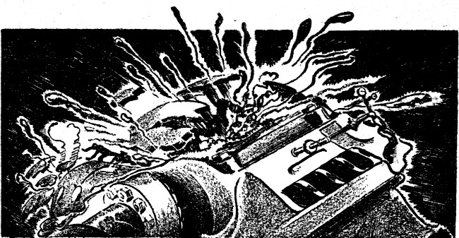
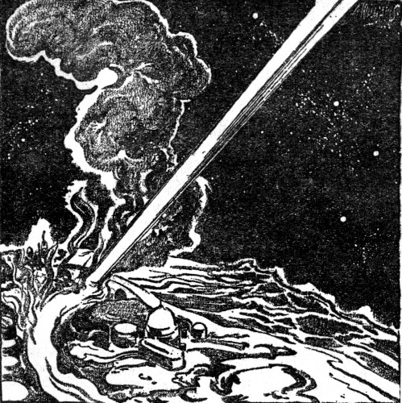
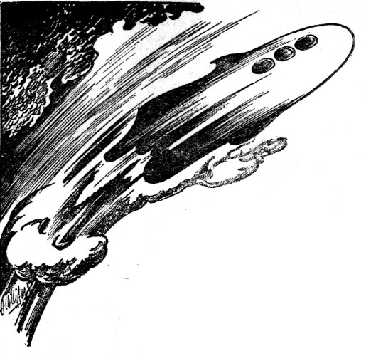

Illustrated by Williams
[Transcriber's Note: This etext was produced from
Astounding Science-Fiction, March 1944.
Extensive research did not uncover any evidence that
the U.S. copyright on this publication was renewed.]
Pluto is a strange planet in many ways. Perhaps it may even be classed as a "man-made" planet, since if it were not for man and his works, Pluto might as well have never been. But Pluto was found abundant in uranium, and then came man to change the ultra-frigidity of Pluto's surface, and to endow Pluto with a breathable atmosphere by transporting great shiploads of the frozen gases found on Umbriel. Then man set up cities, and since the face of Pluto had never been scarred by any kind of intelligent life, the planners had a free and open hand.
So uranium was mined near the region known on the Plutonian maps as The Styx Valley, but which, with characteristic lack of foresight, was across the Devil's Mountains from the River Styx. Across the Devil's Range went the uranium to Mephisto, where it was smelted down into pigs. It was then put on barges and floated down the River Styx to Hell, which lies across the River Styx from Sharon; both cities quartering on the Sulphur Sea.
It was loaded onto the ships of space at Hell, and then raced across the void, sunward to the Inner System where it was used.
But the names are but locationally appropriate. Hell is no fuming, torrid city. It is temperate with a perfect climate. Mephisto's only claim to the nether regions was the dancing flames of her smelting mills that danced on the night sky. The Devil's Range was a small ridge of less than fifteen thousand feet and it was more than amply supplied with passes and near-sea-level breaches.
And the cities at the mouth of the River Styx lived in cheerful rivalry, their main source of jealousy being the lush produce that came from the hinterland behind each. And the River Styx itself was a garden-spot for yachting clubs; bathing beaches lined the mouth for fifteen miles inward and they were clear-watered and pearly sanded.
Pluto had been a man-made paradise for a number of years, only because Man, the Adaptable, found it economically expedient to make it so.
No, it was not done with mirrors.
It was done with a lens!
The sun should have been a piddling little disk of ineffective yellow. Its warmth should have been negligible, just as it had been for a million years before the coming of man. Pluto had been ordained to be cold and forbidding, but it was not.
The sun was a huge, irregular disk of flaming yellow that had peculiar, symmetrical streamers flowing off; twelve of the main ones and a constantly opening and closing twenty-four minor streamers that flowed outward from the duodecagonal pattern of Sol. These streamers rotated, and looked for all the world like the pattern made by rotating two gratings above one another.
Sol, from Pluto, was as big as a washtub, because of a series of man-made stations in space halfway between Sol and Pluto. These stations warped space by the maintenance of subelectronic charges that produced a subetheric gradient which bent the usable radiations of Sol into a focus. The fact that they were points in space instead of mighty, million mile rings of metal to carry the space-warping charge made the focus of Sol irregular instead of circular, but it served its purpose and men grew used to the scintillating sun.
Certainly, it cost like the very devil, but uranium is not plentiful anywhere else, and men found it economically sound—
John McBride cocked his feet on his desk at Station 1, and began to read his mail. At the fifth memo, he jumped, startled by what was on the page before him, and his feet hit the floor with a resounding crash. Angrily, he punched a buzzer, and a younger man entered.
"Yes sir?" he asked. "What's wrong, Mr. McBride?" he finished noting McBride's startled expression.
"Tommy, take a 'gram and slam it out of here on the rush. Some fool dame is going to try to fly through the lens!"
"Oh, no!"
"Yes! Can't get Terra on the phone, confound it, so fire a 'gram, but quick! Tell her that the restrictions are still in force, and that we aren't fooling! Also that it is illegal, dangerous, and foolhardy and that we absolutely forbid her to try!"
"Yes sir!" answered Tommy and left immediately. The ticking of the teletype machine in the outer office came faintly to John's ears, but the knowledge of the message's departure did not ease the tension.
Ten minutes later an answer came back:
HAVE RECEIVED PERMISSION FROM TRIPLANET COUNCIL TO FLY FROM TERRA TO PLUTO THROUGH AXIS OF LENS. PERMISSION GRANTED BECAUSE OF STATEMENT OF NO DANGER EXPRESSED BY DOCTOR HOLMANN OF THE DEPARTMENT OF ELECTRO-GRAVITIC PHENOMENA. SAVE YOUR ELECTRICITY, I LEFT TERRA ON TUESDAY MORNING!
SANDRA DRAKE
"Holy St. Peter!" exploded McBride. Tommy winced in sympathy, because he knew what was coming. "Doc Holmann! My father studied electro-gravitics under him. He was an old fuddy-duddy then. The old drip owns that university, that's why he's still in the E. G. chair. I'll bet you a hunk of the lens itself that the old goat doesn't even know that we are now using magneto-gravitics in the front lens element. That's the stinker!"
"Is it so dangerous?" asked Tommy. "If she uses the usual methods of coming to Pluto, she'll be going well towards ten thousand miles per second by the time she passes the front surface."
"That's the trouble," groaned McBride. "Like all other space crates, her hull will be made of cupralum alloy, which is as paramagnetic as alnico is diamagnetic. She'll hit that magneto-gravitic warp that makes up the fore element, with that antimagnetic hull and it will be like a pane of glass being struck by a minute pellet of steel. She'll cause the collapse of the front element, and with the load-loss, the electro-gravitic elements of the aft element will fall out of alignment. Heaven only knows what'll happen. Well, we'll all know soon enough!"
"How long?" asked Tommy.
"Well, she left Terra Tuesday morning. She didn't say what time, but there's little sense in finding out right now. That hop would take sixty-eight hours at a standard 5-G from Sol. Say sixty-something, and let's see, this is about Thursday evening—Greenwich Time, but that screwball might give zonal time and have taken off from Hawaii or Sevastopol as the fancy hit her. I'd say sit tight and expect anything from attar of roses to total extinction within the next couple of hours. Also get on the lens network and tell the gang to oil up their trouble-wagons. Everything from spacesuits to hand generators. Oh Peter! I'm going to quit this ding-busted job and take up truck farming!"
"Ever hear of Sandra Drake before?" asked Tommy.
"Yeah, she's one of those fool females that isn't content with being equal to any man—she's got to prove she's better! And she doesn't care how many people she hurts doing it. If Sandra Drake gets through the lens to Pluto, she'll get her ears toasted right."
"O.K., John. I'll get on the lens network and warn the boys to prepare for trouble."
Messages began to fly around the periphery of the great lens, and the station attendants swore and began to collect tools that would be necessary to make any conceivable repairs. Small flitters were powered and made ready, and everything that carried manual controls was inspected and cleaned for action.
But Sandra Drake did not wait for the completion of the preparatory work. It was three hours after the first message flew around the lens that Sandra's ship, the Lady Luck, came roaring out of space and slid its nose into the magneto-gravitic warp of the front surface.
The Lady Luck came to a stop within five thousand miles, which was remarkable, since she was hitting almost eight thousand miles per second. If it were not for the fact that space itself was warped behind the front surface, the Lady Luck and Sandra Drake might both have been reduced to a flaming mass; but no one really knows what goes on behind the surface of a magneto-gravitic warp, and the laws that rule mass, velocity, and inertia must operate under a new principle. Sandra Drake, the ship no longer capable of any but minor operation, limped aimlessly, and Sandra, semiconscious did not direct the Lady Luck.
In the twelve stations that made up the periphery of the fore element, the electrical equipment went crazy. Fuses blew, and circuit breakers crashed open. The magneto-gravitic warp collapsed, and the power regulation of the generating equipment could not hold the power to a safe level. Excesses went into the operating equipment and raised the operating levels to overload values. Relays welded shut; relay coils blew. Switches arced across their open contacts, and closed switches took the overload until their contact points melted: the melting stub ends made sputtering arcs of copper-green hue until the gap was too wide. The pungent smell of burning insulation filled the stations, and the personnel covered themselves with the space-suit helmets and breathed canned air.

The careful positioning of the stations that held the warp of the collapsed fore element was lost as the tractor-pressor beam system took the unleashed overload current. The regular duodecagon pattern warped into a space pattern as the alignment lost not only its regularity of distance-between-stations, but its perfection of flatness.
Then as the raging current was stopped by open circuits, burned or broken, the internal damage stopped also. The stations that held the magneto-gravitic warp began to drift aimlessly, pulled at cross-purposes by the undirected tractor-pressor system.
The electro-gravitic warp of the second element thickened as the fore surface moved into the space formerly occupied by the fractured lens. The effect was similar to that of restraining a spring and then releasing it. The rear element went into a damped cycle of expansion and contraction, alternately shortening and lengthening the focal length. The series of stations that held the rear element were shaken in long, sickening swells as the electro-gravitic warp oscillated back and forth along the axis of the lens.
Here, in the stations that held this warp, there was no danger from electrical failure. But the long swells of back and forth movement shook the mechanical equipment until the bearings of rotating machinery began to rattle. An occasional relay would snap shut for the briefest of instants and make instantaneous circuits that caused minor imperfections of the lens.
The cycle damped to zero in ten minutes, and then the men in the second element stations surveyed their bruises and began to pick up the mess; from every cabinet, from every bench, from every shelf, tools, supplies, and instruments had been thrown. They lay in profusion throughout the stations and must be replaced before the men could make a move toward repair.
On Pluto, all was serene. Light that had passed through the distorted lens had not reached the far planet yet, and so they did not know.
Men toiled in the uranium mines in the Styx Valley and men fought the low passes of the Devil's Range to bring the ore to Mephisto, and in Mephisto, children were just getting out of school. Women were shopping, and chatting with their friends and haggling with the shopkeepers over the prices and quality of their proposed dinners. Two hundred miles down the River Styx, at the twin cities of Hell and Sharon, men and women lolled in the warm river and played on the perfect miles of beach. The Sulphur Sea, which was as misnamed as any of the other places on Pluto, was dotted with the white sails of pleasure craft, and the occasional white wake of a power speedboat.
A foursome on the fifth green at the Tantalus Country Club was arguing about a handicap, since one of their number was ten strokes better than the rest. A big league baseball game was in progress at Imps Park in Hell, and the home team was beating the Red Devils by a score of 9 to 8. It cannot be recorded that Satan was pitching, though that would have been a nice touch. The pitcher's name was a staid and simple Jones.
And there were the sordid sides, too. Three men and a woman had been hit by automobiles during the course of the afternoon between the twin cities. A burglar had plied his trade to the tune of thirty-three hundred dollars from Faust's Playhouse, and was later apprehended trying to make a getaway along the Road to Hell, which connected the twin cities and was always spoken of as being named "The Road To Hell" because it permitted the citizens of either city to go across the bridge to the opposite side. The planned name of Bifrost Bridge now appeared only on maps and formal writings since the informal name was by far the more popular.
Then without warning, the scintillating sun went out, and left Pluto once more the God of Darkness. It came on again, as the rear element extended and shortened the focal length once more to a degree slightly less than the length of the complex lens. It oscillated, and it wavered, and it danced from spot to spot on Pluto. Where it touched with perfect focus, it seared the ground and sent up huge gouts of flame and tortured earth as the whole output of the sun bore down upon a small circle. It hit the Sulphur Sea, and sent great steaming clouds of vapor floating across the twin cities. It cut a sear across the center of Bifrost Bridge, and cut the famed bridge in the middle of the span. Bifrost broke and fell into the River Styx—and like the famed tale of Ragnarok, the falling of Bifrost Bridge preceded a period of terror.
The dancing spot of pure solar hell settled down, and with the characteristic perversity of uncontrolled things, it came to a perfect focal point of some six hundred feet in diameter, under which spot everything went molten.

Without waiting for any further information, the astronomers at the Pluto Observatory made rapid and precise calculations, and issued orders to the effect that all people must evacuate along the expected trail of destruction.
It was their quick work that stopped the casualty list short.
And Pluto, writhing in one tiny spot from terrific heat, began to cool everywhere else. Men looked at one another in fear as the cooling breezes began to sweep across the face of Pluto.
The production of uranium stopped, as did everything but the overworked communications system.
John McBride glared at the telephone. "They should know by now," he snapped, "that we can't take time to use the phone with all of this devilment going on."
Tommy handed him a spacegram. "Someone knows," he said cryptically.
McBride tore the 'gram open. "Oh, great ache! Tommy, pass the word on the lens network. Tell 'em to cut the electro-gravitic warp, too. The thing is focused right on the middle of Pluto and is cutting a six-hundred-foot swath across the face of Pluto like an oxy-atomic torch cuts butter."
"Can't we refocus it?" asked Tommy anxiously.
"Not without moving the stations. Or playing hob with the warp-generators. Either way would take a week to adjust. Tell Adkins to pull the big switch and hope for the best. Oh yes! Tell every mother's son not to tinker with the P-T network. When we get this mess cleaned up, we're going to need the placement again and there's little sense in letting the stations run free. Thank the Lord the warp will tend to align them again, once it goes on, or we'd have a six-month's space surveying job to do."
The lens-network phone rang, and McBride answered.
"John? This is Fuller on 9. We just found Carlson under the alphatron. He's knocked colder than last week's wash and he's got a bad alpha burn."
"Better get him into an interstation flitter and bring him over. Or is Doc Caldwell there?"
"No, he isn't!"
"Bring him over anyway. I'll broadcast a call for the doc."
"What'll we do without him?" asked Fuller in a helpless tone.
"What'll you do with him in an unconscious condition?" asked McBride unsympathetically. "Before Carlson can do anything, we've got to bring him into the open. Besides, we won't be ready for Carlson until we get the mess cleared up."
"O.K.," said Fuller in an abashed tone. He hung up, and McBride snapped the button that sent a loud-speaker call through the entire system.
"Is Doc Caldwell within hearing? Call McBride."
Automatic tapes took up the call and repeated it at intervals until the doctor heard and put in a call to McBride.
"Yes, John?"
"Doc, where are you?"
"Station 27."
"What's doing?"
"Few minor cuts and a fractured skull."
"What does that mean in time?"
"Half hour."
"Then take it, and then get to 1 as soon as you can. Carlson needs attention."
"Right-o!"
McBride called Station 9 again. "Fuller? Look, Bob, how's 9?"
"Not good," said Fuller glumly. "Only one thing outbalances the rest. The alphatron went up with the rest of the stuff or Carlson would have been burned to a crisp by now. That means we'll have to run over to 1 and get a new alphatron."
"Can you repair it?"
"Nope. The field coils are melted right down into a copper ring and the insulation, which was vaporized, is now deposited all over the walls of the station in about two hundred atomic thicknesses. The latter is the worst, I think. That means that every single relay contact in the place has got to be gone over with trichloroethylene and a five-hundred-point file."
"O.K., Bob. Send Tiny Hanson over with Carlson and we'll send him back with the alphatron. Need anything else?"
"Might send something that'll either precipitate or absorb the smell of insulation. The whole joint stinks."
"Cheer up," said McBride. "Think of how it would stink if we were using rubber like the old boys did. That, Bob, would really make your eyes water! No, I haven't anything here that you haven't there. It'll go away as the atmosphere clarifier takes up the impurities. Better keep a close watch on the filter screens, though, or you'll get the system fouled and the atmosphere will not be cleared."
"O.K. We're about to start right now. Tiny will be over in just as long as it takes to go around the lens."
"Wait a minute! Cut across, Bob. After all, the lens is down, and we needn't worry about crossing direct."
The phone rang again. McBride picked it up and bellowed: "Hello!"
"Dr. McBride? This is Charles Holloway."
McBride swallowed. Holloway was the planet governor at Pluto. "Yes?" he said in a quieter tone.
"You are aware that Pluto is without his artificial sun?"
"We are also aware that the lens system is without power for some stations, without space-warping equipment for others, and without personnel for still others. There may even be a few in which any combination of the three vital factors in mathematical permutation may be applied. If you're looking for encouragement, grasp this straw: We're working like a pack of fools to re-instate the lens. And if you care for my advice, I'd suggest that you issue orders that the lens-to-planet telephone be restricted to calls made from Station 1. We might need something in a tearing hurry."
"I shall issue such orders," promised Holloway. "I have also been informed by the astrophysicists that Pluto will lose about two degrees per hour until the lens is re-instated. There is still a lot of very cold material down in the interior of the planet, they say, and it will tend to draw heat from the surface. You know how the heat gradient is from midnight to noon."
"I understand," said McBride. "But we're not sitting around contemplating the temperature on Pluto, or calculating how soon it will be before you can go ice skating on the River Styx. Good-by!"
John's sense of humor asserted itself, and he picked up a cryptic little card that said: "Do Not Disturb" and hung it over the telephone. He picked up the other phone, and called Station 6.
The telephone rang endlessly at the other end, and McBride cursed. After ten minutes of solid ringing, McBride hung up in futility. "Tommy," he yelled, and a young man came running. "Tommy," he said, "get the number two flitter hot. You and I are going to go over to 6!"
Tommy left, and McBride called Station 8. The answer was prompt. "Look, Jimmy, 6 doesn't answer. You send a couple of your men over—not your best, but a couple that you can spare. I'm going to call 4 and get Jud to send a couple of his assistant specialists over, too. I'll be over myself as soon as I can get there; but it will be a long haul for me. It's near the full diameter of the lens, and twenty-two million miles is no stone's throw."
"O.K.," said Jimmy Allen. "Too bad about this charge business or you could call 5 and 7."
"I know. It's bad enough that I have to change charge to get from 1 to 6, but I'll have enough time to do it, coming from here. Are you on?"
"Sure. We're not in too bad a shape. Mostly ruined wiring and welded relays. The alphatron is still in fine shape, and the space-warp generator can still do a job. As soon as we get cooking again, I'd suggest a replacement, but the darned thing will hold up fine for a few weeks until we have time and a breathing spell."
"O.K., on the way!"
"Right, boss!"
McBride's next call was to 4. "Jud," he said.
"Jud's nursing a set of busted arms," came the disconsolate answer. "This is Pete Jackson."
"How bad is Jud?"
"Conscious, and madder than the devil. He can't even hold the phone, you know, and so I'm acting as his mouthpiece."
"How's the station?"
"Mostly a mess of secondary damage, but it is pretty widespread. Everything in the place caught hell, including the typewriter in the office, which fell off the desk. Got a space-warp generator?"
"Yup, but can you repair yours?"
"I think so."
"Then take a stab at it. I've only got three replacements, and there may be more than that blown out completely. All the results aren't in yet."
"O.K., and we'll make repair right up to the point where we need the generator anyway, whether we can repair ours or not. Then if we need it, all we have to do is to hand it in and hook it up."
"Fine, Pete. Now look, 6 doesn't answer. Send Timkins out there with Joyce. Must be pretty bad."
"O.K., boss. We're on our way."
At Tommy's call, McBride went to the big air lock and the flitter took off for 6. As they went, McBride operated the generator that reversed their charge so that they could land on 6 without difficulty. Halfway across the lens, the telephone in the flitter rang, and McBride dropped the generator controls and picked up the instrument. "John," came the voice, "this is Hastings, on 10. A space-ship just came limping into the station, falling free. We slung out a line and caught it. We cut her open and found the dame that was the cause of all this. What shall I do now?"

"My better instincts say to slug her. The stuff I was taught at my mother's knee says to spare the violence. Keep her there until I get finished at 6."
"She insists on going to the main office."
"Y'might let her," said McBride thoughtfully, his voice slightly sour with distaste.
"Gosh, boss, you can't do that."
"I know. Well, she can't get out of the lock without your assistance. Unless I'm mistaken, all of you are far too busy to bother with a headstrong female."
The phone was silent for a few seconds, and the sounds of a light scuffle came over the line. Then a cool contralto came.
"I'm Sandra Drake," it said with a world of impertinence. "No man is going to tell me where I can't go!"
"Sister," snapped McBride, "you keep that up and we'll jolly well tell you where you can go!" McBride hung up and redoubled his efforts on the charge-reversal generator. "Women," he snarled, twisting the generator controls as though he had the Drake woman by the throat.
Ten minutes before they landed at 6, McBride picked up the phone and called 1. He spoke to his apartment. "Hello Enid," he said.
"John! What's all the shouting about?"
"La Drake tried to run her crate through the lens. She broke it."
"Who's la Drake?"
"Some dame. Look, Enid, what do you do to handle a headstrong female? Besides giving her enough rope to commit self-destruction?"
"What's her purpose in life?" asked Enid McBride.
"Proving that men are inferior animals."
"I won't answer that one," chuckled McBride's wife. "Look, John, where is this man-killer?"
"At 10."
"That's negative, isn't it?"
"Bright woman, yes," laughed McBride.
"Well, I'm no space-warp expert. How would I know?"
"Look, dear," said McBride patiently, "you divide them by two, as I've said before a million times, and if they come out with nothing left over, they're negative."
"But we're on 1—and you can't even divide one by two—"
"I know. One's positive anyway, Enid. Look, kiddo, leave things like screwdrivers and volt-meters and calipers to me and you continue with the can opener as your only tool. What are we going to do to Drake?"
"You stop on your way back and pick her up. I'll take care of Drake. What did you say her first name was?"
"I didn't, but it's Sandra."
"Oh! You mean Sandra Drake, the novelist-adventuress?"
"I mean Sandra Drake, the she space-barnacle on the hull of progress."
"Oh, I've heard of her. And, John, I'll take care of her!"
"O.K., Enid. I'll see you when I get there."
"'By."
Six was as silent as the proverbial tomb. They breached the lock from the outside and went in slowly, to find the station a shambles. Fred Atlock, the superintendent of 6, they found after some search. He was unconscious, suffering from superficial shock, and he had a four-inch cut on his shoulder which was slowly seeping blood from a large clot. Dan Wilkins, the only other man on that station, they discovered in the generator room, clinging speechlessly to the output terminals of the alphatronic power supply. McBride cut the switch, which was one of the few that hadn't welded shut, and the generator stopped immediately, permitting Wilkins to free himself. "Great Lord," he gasped. "I've been sitting there for nine years!"
"By actual count, it's been one hour and twenty-three minutes," McBride told him. "How do you feel?"
"O.K.," said Wilkins in a matter-of-fact tone, and with a slight eye-brow-raising look of surprise on his face that anyone should ask. "After all, anything under twelve hundred alphons merely paralyzes all of the voluntary muscles. The involuntary muscles are as good as gold up to that figure. I just feel a little stiff, like I'd been sitting in one position for an hour and better—which I have. I did everything but explode when that phone rang, but I couldn't will myself loose. When you're across one of those things, you can't even wink an eye at will, but must wait until the involuntary nervous system winks it for you. And, funny thing, you can't even stop your own breath; you just go on breathing automatically, since that's what the involuntary system demands."
"O.K. Where's the gang from 4 and 8?"
"I dunno. Are they coming?"
"Coming? I thought they were here by now."
McBride found the telephone and called 8. "Jimmy? Where is that gang you were going to send to 6?"
"Sorry, Mac," answered Jimmy. "They were needed here to do a heavy job, and so I kept them for a bit. They're on their way now."
"O.K., as long as they're on their way."
McBride's call to 4 was less productive. "Pete? Where is your crowd for 6?"
"Can't send more than one," returned Pete. "Still want him?"
"Why didn't you contact me?"
"Line was busy."
"O.K., send one man. The gang at 6 was indisposed, that's all, and Dan can work now. Fred is going to be out of commission for the duration, but he can still direct as soon as we get him patched."
To Wilkins, he said: "Dan, we're going to trot. There'll be help out here soon. Tommy and I are needed on 10."
The flitter took off again and began to cross the lens for 10.
Allison, at 2, called and said: "McBride? Good news. Two and 3 are ready for service."
"Swell," said McBride. "Now look, call the stations and ask who needs help. You and Fellowes go out and assist."
"Right."
McBride hung up the phone, and it rang almost immediately.
"Mac? This is Caldwell."
"Yes, Doc?"
"Look, Carlson is in bad shape."
"Can you jack him up? Not now, but say in three hours?"
"Probably, but not more than a few minutes. He'd be better in twenty-four hours."
"Gad, Doc, Pluto'll be forty-eight degrees colder in that time! Knock forty-eight degrees off of the temperature on any planet, and you'll probably knock the whole thing for a loop. Better patch him up, Doc, because he's one of the mainsprings that'll be needed when we're about to restore the lens."
"O.K.—and say, John, you don't mind my making a hospital out of your lab?"
"Go ahead. How's the casualty situation?"
"Nothing fatal. Mostly an assortment of cuts, bruises, fractures, and shock. I've been checking the stations, and we've been calling all bad injuries in here for treatment. Takes a little longer, but I can keep my eye on more men if they come than I could if I went traveling. Never can tell what'll happen."
"Have you contacted the after stations? They got a shaking up, but I don't believe that it was anything compared to the fore element stations."
"No, most of the trouble in the back was due to being hit by slowly moving objects of high inertia. They're mostly annoyed, back there. The front system got it, though, what with flying spots of molten metal, electrical discharges that convulsed muscles, and burns from the alphatrons when they went load-free. A few of the boys got hurt when the mechano-gravitic generators collected the full load of the power sources and let them have anything from 10 to 15-G until the gravity-switches cut out. That did more than haul the men to the floor; it also hauled a lot of what would have been light stuff down on top of them at weights from ten to fifteen times normal. That's what hurt the most of them."
"What fell, mostly?"
"Light fixtures, and ceiling equipment. The busbar hangers on 7 gave way and dropped a bus line on one fellow, breaking both legs. Eleven's mechano-gravitic generator misfocused and hauled everything slaunchwise into a corner of every room. The men picked themselves out of a pile of material; everything from loose generators to odds and ends of wire. The latter didn't hurt, but the heavy machinery did."
"Fine business, Doc. Keep 'em patched!"
"That's my business," said Caldwell. McBride could hear him muttering as the doctor hung up.
McBride's flitter landed at 10, and inside of the lock, he was met by a picturesque red-headed woman of extreme beauty. There was green fire in her eyes, and her anger possibly made her more beautiful. McBride took everything from her expensively-shod feet to her exquisitely coiffed hair in one sweeping glance and decided immediately that it was a shame that a woman like Sandra Drake should have been a stinker.
"Mr. McBride, I assume?" she said in that contralto voice.
"Dr. McBride," he corrected, standing upon his dignity for the first time in seven years.
"Doctor?" said Sandra scornfully. "Doctor of what?"
"Doctor of Philosophy, major in sublevel energies including the gravitic spectrums; electro, magnetic, and mechanical. Master of Mathematics, Bachelor of Arts, and Doctor of Language and Literature Honorary. Is that sufficient weight to gain me a modicum of respect?"
"I have no respect for someone who stands in my way!"
"I see that. Nor anything, either. Do you know what stopped you?"
"No, but—"
"Your precious Dr. Holmann is an old goat who is still living in the past. But even he should have known that you can't ram a space-ship made of cupralum alloy through a magneto-gravitic space warp. Permalloy, or alnico, or anything diamagnetic will zip through such a warp and pick up velocity on the way—probably enough in this case to crush you flat against the bottom of your ship. But a paramagnetic alloy such as cupralum has about as much penetrative power as a forty-five caliber slug of wet soap against tungsten-carballoy. But at your velocity, not only did you stop in something short of nothing flat—God knows what your deceleration added up to—but you fractured the space warp, too."
"A man will do anything to prove his point," snapped Sandra. "And I have no doubt that you would do anything, too. What did you use on the Lady Luck?"
"Nothing."
"I don't believe you."
"I don't give a care! You want to go to Station 1? Then come along!"
"You lead in your ship, I'll drive the Lady Luck," said Sandra.
"Not on your life. You're going to leave the Lady Luck right here."
"I don't see why—or do you intend to steal my ship?"
McBride gritted his teeth. "Look, beautiful and senseless. This is Station 10. It is electronegative. One is electropositive. You haven't got a charge-reversal generator in that crate of yours, because I know darned well that the only place where they have 'em is right here in the lens itself. It's the only place they're needed. Now, Miss Drake, the lens is twenty-two million miles in diameter. It is that size because a disk of that diameter subtends the same arc as the sun does when viewed from Terra. Since the lens is situated halfway between Sol and Pluto, the magnification amounts to the projection of the sun on Pluto equal to the sun on Terra. Or don't you understand the simpler mathematics of optical systems?
"Now, out across six and a half million miles of space, from here, are Stations 9 and 1, both electropositive. It so happens, Miss Sandra Drake, that if the density of matter in space were as high as the atmosphere of Terra at twenty thousand feet, the difference in charge between Station 9 and this one, 10, would be high enough to cause an ionization discharge! Now put that in that jade cigarette holder and choke on it! Can you possibly—is that microscopic mind of yours large enough—conceive of the effect upon contact? Sister, you'd not only be electrocuted, but you'd light up the sky with the electronic explosion to a degree that would make some Sirian astronomer think that there was a supernova right in his back yard. Now quit acting like the spoiled brat you are, and come along."
"Nice, high-sounding, technical words," sniffed the red-headed girl. "I presume that you have such a thing in that little can of yours? I mean something that will change the charge on it while in flight?"
"I wouldn't have survived the first crossing if I hadn't," snapped McBride.
"And pray tell, how do you detect the change in the electronic charge from within?"
"The electronic charge is so great that a heavy active atom such as bromine will, under the positive charge, lose enough of the outer ring electrons as to inhibit the formation of the more complex atoms, while under the negative charge there will be such an excess of electrons that a heavy element of the zero group, such as xenon, will actually be forced to accept an additional planetary electron and will then combine with some of the more active elements. So when xenon bromide forms, we know we're highly electronegative, while the chemical dissolution of tetrachlorodibromomethane indicates a hellishly high positive charge. When we approach the station, we use a little gadget known as an electrostatic gradient indicator which is useful over short distances, and with which we adjust our charge-difference to a sane value. Pluto and the solar system in general can thank their stars that the carbon-chain molecules that go into the human system are stable enough to resist dissolution. We are able to maintain the lens on less than enough charge to kill us all, though the boys in the odd-numbered stations report a lower metabolism than those in the even numbered ones."
McBride paused. "And if you're worried about that space-warp-wrecked can of yours, I'll be more than glad to give you a receipt for it. Coming? I've got to go."
Sandra Drake was still skeptical, but she followed in spite of it.
John McBride was met at the space lock of Station 1 by one of the lesser casualties from 3, Douglas Whitlock. McBride said: "How's the arm, Doug?"
"Broken, but on the mend. Doc will put a stader on it in a couple of days and I'll be able to use it again."
"How's 3?"
"Not too bad. But, brother, there's a million miles of loose wire floating around the place. Tonk and Harry are rewinding the alphatron leader-coils which developed a shorted turn down near the core."
"How are they doing that?" asked McBride.
"It was tricky, all right. And this'll slay you. They're using the nine-inch lathe!"
"Huh?" McBride was thunder-struck.
"Well, as Tonky said, it was an emergency. So they used the acetylene torch to cut the lathe bed off right before the headstock. They moved the rest of the bed back about twelve feet and welded it to one wall of the room. Now, there's room to get that big core in the lathe. The lathe is ruined, of course, or rather the bed is, but the alphatron will be ticking them off in another couple of hours." Whitlock looked at the girl and asked McBride: "Where did you find her?"
"This," said McBride, "is Miss Sandra Drake."
"Oh yes," said Whitlock brightly, "Drake, the human cannon ball ... or is it screwball?"
"And what happened to you?" asked Sandra caustically. "Did you step into an open port in the dark?"
"Frankly, I was hit by a falling busbar—"
"Probably the real cause of this whole failure."
There was fire and blood in Whitlock's eye as he looked at Sandra Drake. Actual bloodshed was averted by a very scant margin when Enid McBride entered and stepped before Sandra, cutting off any attempt of Whitlock's to advance upon the red-headed female with intent to inflict damage.
Enid McBride was three or four years older than the other woman, and it must be reluctantly admitted that she was not the four-alarm all-out beauty that was capable of matching looks with Sandra. On the other—and most important—hand, Enid had the ability to make men and women like her; in her less boisterous way, Enid's charm and personality made itself felt even before she spoke to Sandra.
"You're needed," she told Sandra quietly.
"For what?" asked the Drake girl, and her cool contralto sounded scratchy in contrast.
"We've a number of hurt men here and we need help. You're elected."
"I've never helped a man in my life."
"You are getting no younger," said Enid with a short laugh. "I'd say it was about time you started."
"Oh men!"
Enid looked at McBride, and with that almost telepathy that seems to exist between husband and wife, John understood that he was to leave this to Enid. He thought with a smile: Enid's smaller, but I'll bet she packs a better wallop! Then he motioned to Whitlock, and they left as Enid said: "You're a complete washout, my dear, and your not knowing that makes you even more complete. Why don't you get smart?"
"Are you trying to tell me how to manage my life?"
"It's time someone did. Obviously you aren't capable of managing it."
"I do all right."
"Nuts. If this is a sample of your brilliance, I say, 'bring back the good old days!' Look, Sandra, what are you trying to prove?"
"That I'm as good as any man."
"Spinach. Ask any man and he'll probably admit it. What you're trying to prove is that you're better than all men, isn't that it?"
"Well—"
"And since you are superior to men, no doubt you'd prefer legal protection for them—marriage laws designed to assist and protect the weaker and inferior male; labor restrictions so that grasping women may not take advantage of them; protection so that avaricious women will not be able to take advantage of his lesser experience?"
"Why that's ridiculous!"
"Is it? A few hundred years ago, men set up such laws to protect women because they realized that there were among their own sex, men who would think nothing of taking advantage of an unwary woman. As soon as the women decided that they were equals, men reluctantly removed that protection. Now, Sandra, if you are equal or superior to men, you should be civic-minded enough to want to protect the weaker."
"Bah! You talk like a man!"
"Nonsense. I'd scream like a stuck pig if any man decided that I couldn't take care of myself. But I have enough sense to realize that all of the courtesies that men offer me are tokens of their affection and not gestures toward someone who cannot get in out of the rain without help. As for the weak, what would you say to a man who slugged a woman and then ran off and left her to suffer?"
"He's a rat!"
"How about the dame who does the same to a man?"
"That's—"
"Be careful, Sandra Drake. The girl I'm speaking of is you!"
"Well—" Sandra let the sentence die in midstream.
"Think it over, lady wrestler. And when you make up your mind, come on in and help."
Enid left Sandra standing in the room. She went to the improvised hospital and began to work. Her touch was gentle, but within her, Enid burned. To Enid, Sandra Drake was as representative of the female sex as poison ivy is representative of the plant family.
John McBride faced the men in his office. "Give it to me in rotation," he said. "Starting with Station 1."
"We're down to the ruined relays and a few hundred feet of burned cable. A half hour with help."
"Two is running O.K. on test power. She can stand a little sprucing, but that can wait."
"Three is ready for test power, or will be within the next ten minutes or so."
"Four will be O.K. as soon as we get the space-warp generator tuned. We managed to repair the input circuits."
"Five is running on test power."
"Six is ditto."
"Seven is still cleaning up some of the mess, but can go on test power as soon as the time is ripe."
"Eight is O.K. except for some burned cable and some messiness. We never were in really bad shape."
"We're still cleaning relay contacts with files. Take another hour at least, and we've got so much help that the boys on the upper panels are standing on the shoulders of the men working on the lower panels. Also, they're so close together that they need a hortator to beat time so their elbows won't clash. That's how we stand on 9."
"Ten's in shape for test."
"Eleven needs a new alphatron, which is being hooked into place right now."
"Twelve is ready to go on test, according to Ben, who called just before you came."
McBride smiled wearily. "That's the fore element," he said. "They tell me that the rear element is all ready and waiting. So all we need now is Carlson. Give orders to have the propulsion operators start aligning their stations. And get me Doc Caldwell."
The phone rang and McBride picked it up. "This is Doc," said the man on the other end. "Look, Mac, can you come over to my office?"
"Sure," answered McBride. To the men in the room, he said: "Fight it out among you. Give help to any station that still needs it. We're going back in service as soon as we can—in an hour, I'd estimate. That's if Carlson is capable of handling his end."
McBride went to Doc's office. Caldwell smiled bleakly. "He's conscious. He insists on talking to you."
"Is he O.K.?"
"He's weak, but he'll be all right for a few minutes."
"Look, Doc, I don't want to kill anybody by making him work when he's likely to keel over, but we need Carlson if we ever needed any man. Darn it, why are there so very few men with supersensitive balance?"
"It's hereditary, and the human race is still mongrel by its own law," said Doc with a smile. "By which I mean that it is illegal to marry your own brother—or sister."
McBride laughed, and then went in to see Carlson.
"Carl," said McBride, "how do you feel?"
"Wobbly."
"How wobbly?"
"Not too bad. How're things?"
"We've been running around like waltzing mice for the past few hours, but we'll be ready for business in a few hours."
"I'll be needed."
"In an hour."
"I'll be up."
"He'll be up," said Doc. "How long will he be needed?"
"Perhaps an hour."
"He won't be up that long."
"What can we do?"
"Get everything ready. If he can hold out, or if you can set things so that the warp can be established in a shorter time, we're in. You couldn't hold a partial warp for any length of time?"
"Not a chance. It's one of those yes or no things. You can't stand still while building a space warp. You must either build up or let fall."
"If you could use something less than perfect, supersensitive balance, I could buck him up with a bit of dope and he'd last longer."
"Why not stand by with the needle? Or could you give him something that will wear off in a half hour and sort of increase that balance as the time passes—giving him the buck-up at the first and saving that strength for later?"
"Might work, but I sort of hate to take finely-cut chances like that," said Caldwell. "We'll try it!"
The last report was in, and all stations were ready and operating on test power. McBride spoke into the broadcast communicator, so that the superintendents of all stations could hear him simultaneously.
"Rear element, fore stations, set up primary warp."
Generators whined up the musical scale in the twelve stations that circled the junction between the fore and aft elements. Slowly and ponderously, the stations began to fall into a true plane, and as they began to align, the electro-gravitic generators began to work more efficiently.
Before the warp had started to form, McBride called: "Rear element, rear stations, set up secondary warp!"
The rearmost twelve began to fling their power across the circle, and the space between the two regular polygons began to take lenticular shape. As it formed, it thickened, and the massiveness of the space between the warps set the stations more firmly in place. They oscillated gently back and forth, in a damped cycle and would be moving in gentler and smaller excursions for days before they came to total rest.
"Fore ring, set up magneto-gravitic warp!"
The heavy alphatrons began to fill the space between the fore stations with alpha particles. Circling in ever-decreasing spirals, the particles set up a super-powerful magnetic field parallel to the axis of the lens. As they reached the center of the lens, the alpha particles lost velocity and with their lost speed, they also lost their effect. They died out, and to all effects, disappeared.
The space between the electro-gravitic warp and the magneto-gravitic warp decreased as the fore warp thickened, and then with a sickening swell on the part of the stations themselves, the center of the fore warp touched the center of the aft warp.
Cohesion took place, and the fore warp, not completely formed, snapped back against the electro-gravitic warp, drawing the fore stations back a few miles with it. Their mass made them pass the point of balance, and then the overly-convex surface exerted pressure against the stations, and they moved forward into damped oscillation. The oscillation continued for four long, slow swings, and then McBride decided that they were stable enough for continued action.
"Doc," he yelled. "Get Carlson, take the surface flitter, and keep an eye on him while he keeps an eye on the lens!"
Out across the fore surface of the magneto-gravitic warp went the surface flitter. Out across the firm surface of warped space went the flitter, running on the way of magnetic power where pseudo-gravity was made at will. It ran across the lens to the center, and Carlson seated himself in a stiff chair and put his head against a niche in the hard back. Before his mouth a microphone was placed, and every bit of motion was stopped in the flitter. Even the doctor sat quiet in order that he would not disturb Carlson's perfect balance.
"We're thick on the 5 edge," he said, and McBride turned and spoke to Station 5.
"Decrease alphatron output," he said.
"Now about one quarter that amount on 6."
The adjustments were made, and Carlson's perfect balance told him whether or not the optical axis of the lens was correct by its pull upon the semicircular canals of his inner ear. A half hour passed, during which the power output of the various stations were adjusted, and after each adjustment, there was a period of waiting as the new output demanded a new positioning of the station to meet the curve of the lens. Then Carlson said, in a tired voice: "Mac, they're O.K., I think. Circle 'em!"
"How's he, Doc?" asked McBride.
"O.K., but weak. He'll last another fifteen minutes."
"Make him rest for that time. We'll need him then."
McBride gave the signal, and the three rings began to rotate; the fore and aft rings going clockwise and the center ring moving in the opposite direction.
Then, fifteen minutes later, when the rings had gained their orbital velocity, Carlson resumed his post.
For ten minutes he sat stiffly in the chair, his eyes closed and his every nerve straining to catch imperfections in the thickness of the gravitic warps. He was the key to success, and he had no equal. For the strength of the pseudo-gravities and the power of the magnetic field that coupled with the fore element prevented any of the more intricate machinery from functioning. Only man, whose nervous system was not interrupted by magnetic fields, and whose chemistry and physical attributes were not overly disturbed by electronic charges, could have established the correction of the lens.
Carlson and Dr. Caldwell sat out in the center of a magneto-gravitic field that would have destroyed the finest of balance-mechanism, and above an electro-gravitic field that would have prevented the operation of an instrument sensitive enough to detect imperfections in gravitic alignment.
Always there would be men with Carlson's gift of super-perfect balance, and they would find their life work in maintaining the life-giving lenticular warp in space.
Carlson slumped wearily in his chair and smiled tiredly. "O.K.," he said. Caldwell started the crude drive and the surface flitter started to cross the lens to Station 1.
On Pluto, the first sign of renewed life was a flash of light in the sky. It started as an expanding pinpoint and burst out over a quarter of the sky before it diminished to a safe value. The scintillating fingers that darted from the twelve-scalloped sun were still. Then, as the magneto-gravitic warp was established, the color of the sun changed slightly, as the compounded lens removed harmful radiations by controlled chromatic aberration. The size of pseudo-sol expanded and contracted, and then settled down to a familiar size. The long fingers of light, that were leakages through the interstices between the stations, began to change as the stations took up their orbital movement. Then the streamers began to spread outward from the sun, detaching themselves as they reached maximum length and dying as their inner ends crept out to meet the far extension of the streamer. Between them, other streamers started to grow.
The pattern became familiar, and the men and women of Pluto ceased to look at the wonder of their returned sun.
Then they returned to their everyday lives.
THE END.